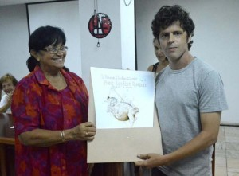

Por Camilo García López-Trigo.
Los Premios UNEAC de Literatura convocados para este año 2015 fueron entregados en la tarde del viernes 11 de septiembre en la sala Rubén Martínez Villena de esa organización, en una ceremonia que también conmemoró el 50 aniversario de la creación de un certamen que ha promovido desde 1965 lo mejor de las letras en Cuba.
“No ha quedado una generación, una tendencia, un movimiento literario, un momento de nuestras letras que no haya dejado su registro en el certamen. Desde la literatura de la violencia y la impronta testimonial de los años 70 hasta la aparición de nuevas hornadas de autores que revelan una mirada crítica y un nuevo posicionamiento ético”. De esta forma se refirió al Premio la escritora Jamila Medina, quien tuvo a su cargo la conducción del encuentro, ante la presencia del Presidente de la UNEAC Miguel Barnet y otras personalidades de la cultura cubana.
Die Premio Ismaelillo, en la categoría de poesía para niños y jóvenes, el jurado integrado por María Dolores Ortiz, Nelson Simón y Mirta Yánez decidió por unanimidad que fuera otorgado a José Manuel Espino Ortega por su obra Asteroide B612. Al hacerlo, se consideró “la original forma de recrear el libro El Principito de Antoine de Saint-Exupery, con un estilo atractivo que permite un acercamiento novedoso a los personajes y temas del clásico libro francés”.
Además consideró otorgar menciones a Alberto Hernández Sánchez por su obra Revelaciones, a Héctor Luis Leyva Cedeño por Alicia Maravillada y a Randoll Machado Hernández por el texto Cuaderno de la paz y de la guerra. Los miembros del jurado quisieron hacer notar la mejoría apreciada en la redacción y el uso del lenguaje de las obras presentadas, sin embargo hicieron patente su convocatoria a la necesidad de que los autores tengan un “mayor uso de la imaginación, el humor y la gracia, además cuidar con atención la ortografía”.
Die Premio Juan Pérez de la Riva, en la categoría de ensayo de tema histórico social, el jurado conformado por los escritores Jesús Arboleya, María del Carmen Barcia y Aurelio Alonso decidieron por unanimidad otorgárselo a Jesús Fuentes Guerra por su obra Los negros congos en Cuba, valorándolo como “el resultado de una rigurosa investigación lingüística, con el uso de instrumental glosométrico y lexicográfico y con soporte en trabajos de terreno en Cuba y en el África bantú, además de una elevada y sólida selección de fuentes escritas.”
Al considerar que fue redactado con claridad, coherencia y un fundamentado sentido crítico, destacaron que la obra representa “un aporte metodológico fundamental que enriquece el quehacer de aquellas disciplinas y contribuirá a marcar el cauce futuro de las investigaciones sobre la religión, la literatura, el arte y los estudios históricos sobre las raíces africanas en nuestra cultura, en Cuba y en el continente.”
Außerdem, valoraron la calidad del conjunto de los trabajos presentados y propusieron que fueran considerados casuísticamente para su publicación, a partir de los aportes puntuales que contienen para distintas áreas del conocimiento de la realidad nacional y de nuestra América.
El jurado del Premio Cirilo Villaverde, en la categoría de novela policíaca, conformado por Emilio Comas, Armando Cristóbal Pérez y Julio Travieso decidió unánimemente otorgarlo a Jorge Luis Sánchez Bravo por su obra La navaja suiza, al considerarla “una obra de excelente factura, caracterizada por una trama imaginativa y novedosa, muy buen manejo de los personajes y un lenguaje cuidadoso y preciso”.


Este año también tuvo la peculiaridad de que fuera retomada la entrega de las Becas de Creación Literaria Cintio Vitier, que se otorga a los proyectos presentados en dos categorías: estudios críticos y obras de ficción. El jurado conformado por los prestigiosos escritores Virgilio López Lemus, Alberto Garrandés, Salvador Arias, Pedro Pablo Rodríguez y Carlos Tamayo decidió que fuera otorgada en la primera categoría a Mayra Beatriz Martínez Díaz con su trabajo Ser hombre en Martí: empieza en fuego y para en ala y en la segunda categoría a Geovannys Manso por su proyecto Inverness.
Durante el encuentro se recordó que a finales de año, el sábado 19 Dezember des 2015, se realizará en la UNEAC una celebración por el 50 aniversario del Premio UNEAC al que se están dando cita fundadores, editores y escritores premiados durante todos estos años.